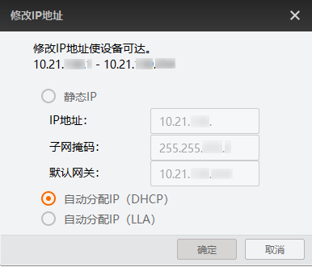
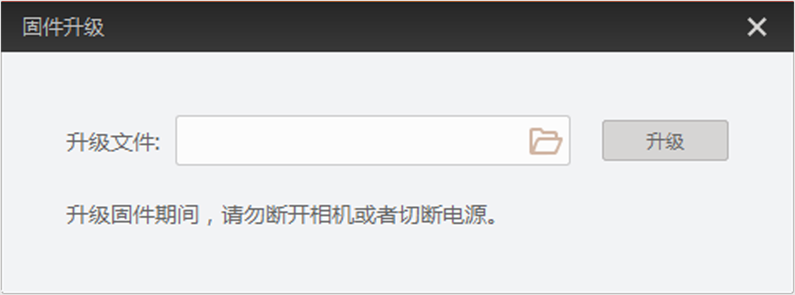

若在设备列表已发现读码器且设备未被占用，可根据需要修改读码器IP或升级其固件版本。
若您需要设置读码器为静态IP地址，或由于网络故障等问题设备不可达需重设IP以匹配新的网络环境等，可通过以下步骤修改读码器IP。
在设备列表选择需要设置IP地址的读码器。
右键单击选择修改IP进入IP配置界面。
根据需求选择IP配置类型，可选静态IP、自动分配IP（DHCP）或自动分配IP（LLA）。关于IP配置类型具体介绍请参见IP配置工具。

点击确定。
为完整使用读码器最新功能，建议您定期升级设备的固件版本。可联系技术支持获取最新固件。客户端支持UDP固件升级和TCP固件升级2种形式。
|
对比项 |
UDP固件升级 |
TCP固件升级 |
|---|---|---|
|
使用前提 |
读码器处于可用状态 |
读码器已连接且未处于取流状态 |
|
配置路径 |
|
|
|
支持情况 |
所有系列读码器均支持 |
仅部分读码器支持，请以实际界面为准 |
|
特点 |
无需连接读码器即可升级，且支持对多个读码器批量升级 说明
单击主界面菜单栏进行批量升级。 |
升级速度更快，且支持对多个读码器批量升级 说明
单击主界面菜单栏进行批量升级。 |
可参考以下步骤完成UDP固件升级。
在设备列表选择需要固件升级的设备。
右键单击选择固件升级。
通过升级文件处的选择与待升级设备型号一致的固件程序（.dav文件）。

点击升级按钮。
升级完成后，客户端会弹框提示升级成功，读码器自动重启。
若固件升级中选错型号，会导致升级失败且不覆盖原固件。若出现此类固件升级失败或异常终止的情况，读码器将自动重启。